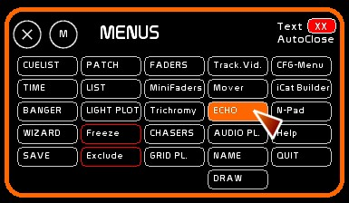
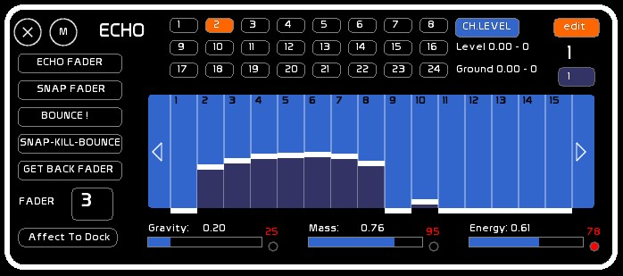
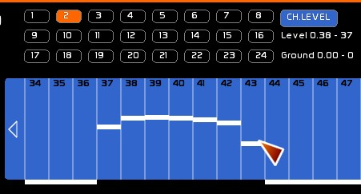
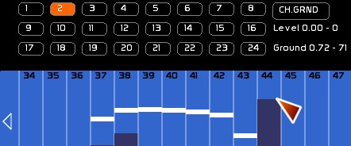
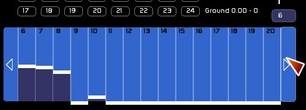
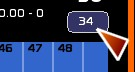
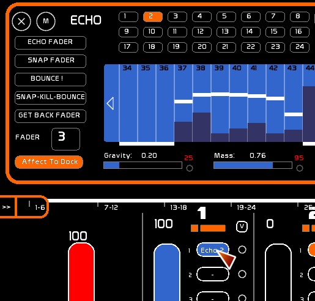
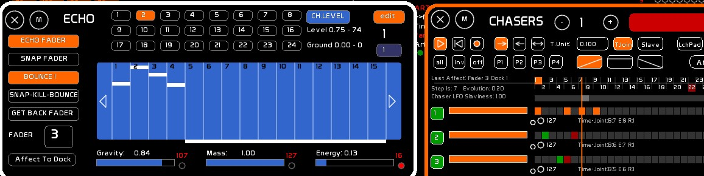
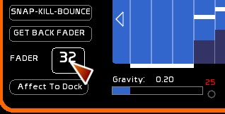

Right click to get to the [MAIN MENU] and click [Echo]:

[Echo] is a module to bring down levels of circuits in a “realistic” manner.
When channels touch zero, they will bounce with the parameters of gravity, mass and energy as assigned in the Echo preset.
A rebound in continuous mode (Echo fader) is like a light echoing, hence the name of the module.

There are 24 presets that Echo can run at the same time. Each preset can be assigned to a fader.
The array of 512 channels is displayed below.
The 512 channels can be manipulated with the mouse, or the values can be retrieved from a fader.
For each channel you can edit the high level, or a low level if you do not want the channel to go all the way to zero.
Below the table of channels, you can manipulate the constants of the Echo Preset:
On the left are the various ways the fader can play the Echo Preset:
The Number of the fader assigned to the Echo is editable (Snap Fader).
The output of an Echo preset is assigned to a dock.




Hovering over this with the mouse will display the information about the high and low level, floating point and DMX (or 255%).
Assign an Echo preset to fader
To assign the preset output to a fader, and thus obtain the result on stage:

[ECHO FADER] creates a continuous link with the state of the Fader. It creates light transient states out of a chaser or a flash, and generate a light echo. This may be an additional effect, a light echo, or a subtraction operation thanks to FX modes, etc. …
Be careful, if the descent or ascent of the fader is slower or as slow as the evolution (ECHO] of a channel, it will fade values directly.

[SNAP FADER] to retrieve on the fly the lighting state from a fader. It takes into account the level of the fader. Information about the FX modes (subtraction, addition, exclusion) are not taken into account.

Each Echo preset stores the values of the 512 channels, as well as the 3 constants (gravity, mass and energy)
Channel high levels and low levels will be set to zero. Constants are set by default to 0.50 Gravity, Mass and Energy 1.00 0.20.
To reset the channel levels of an Echo Preset:
Zero the low levels of an Echo Preset:
All commands except the channel levels, high and low, can be triggered by midi. See: Chart of Midi Assignments